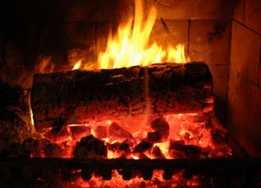

If you have ever failed in the attempt to light a wood fire on the first try, take heart! Using the right techniques and materials, you can have complete confidence that every fire you light will take off immediately and burn reliably.
The same rules apply whether you are starting a fire in a fireplace, woodstove, furnace, barbecue or even a camp fire built on the ground. The first thing you need to know is that the wood must be dry. No fire will light and burn reliably if the wood is damp.
Here are some ways you can tell if your wood is dry enough to burn well:
To get your fire started you’ll need some small pieces of wood to use for kindling: This should be especially dry wood that’s been split small. Softwoods such as cedar and pine work best for kindling. You will need about a dozen pieces that are 1 inch across or less. You’ll need a few pieces that are bigger, maybe 2 inches across, and two or three slightly bigger pieces that will burn long enough to ignite the full-sized firewood.
Now it’s time to build the fire, and there are several methods you can use to stack the wood. The old way to light a wood fire is to bunch up some newspaper, place some finely split kindling on it, put some bigger pieces on that and light the paper. The bottom-up approach can work provided enough paper and fine kindling are used.
However, this method has two serious drawbacks. First, as the paper burns the pile will collapse and the fire might smother itself. Second, you have to keep adding more wood until you have a respectable fire. I don’t recommend this method because it is too smoky, labor intensive and messy.
Here are three ways to light a fire that, in my experience, work better:
1. Two Parallel Logs. Put down two split logs with a space between them and put some twisted newspaper in the space. Add some fine kindling -1 inch across or less - on the newspaper and more kindling of various sizes across the two logs. This method works well because the two logs give some space for the newspaper and kindling to get a good start. Their burning is usually enough to ignite the two larger logs. After the kindling has almost burned out, more wood must be added to make a full fire.
2. Top-down. I first tried this method to build a camp fire in a wilderness park almost 20 years ago. I’ve been using it ever since. It is absolutely reliable, and when it is done properly there is almost no smoke right from the start. Just place three or four full-sized split logs on the firebox floor or on the ground. Place several pieces of medium kindling across them and then maybe another layer of smaller pieces at right angles to those. Then put 10 or so pieces of fine kindling on top. Now take four or five full sheets of newspaper and roll each one up corner-to-corner and tie a sloppy knot in it. Knotting the paper helps to keep it from rolling around as it burns. Place the knots on top of the fine kindling. Light the paper and watch as the fire burns down through the light kindling, the heavy kindling and into the bottom logs. Using the top-down method, you can light the paper (or pine needles or other forest tinder) and watch the fire burn on its own for at least half an hour, or up to two hours if you are building a fire in a woodstove.
3. Using Fire Starters. Many people use fire starters made of sawdust and paraffin wax. You can buy commercial versions or make them yourself. You can even cut up a wax firelog to make your own starters, or try candle stubs. If the starters are placed among split pieces of dry wood, the fire will start reliably.
No matter which method you choose, as you light the fire, give it lots of air until it is a full, hot blaze. With a little practice, you can become a fire-building pro and never again worry about failure, even with someone looking over your shoulder.
John Gulland regularly writes about wood heating for Mother Earth News. For more information, you can find his articles here, and visit his Web site at woodheat.org.
Do you have suggestions for building a better fire? Share your tips by posting a comment below.
|
 ISTOCKPHOTO/DAVID CLAASSEN With a few simple tips, you can be sure of success every time you light a fire. |
|
|